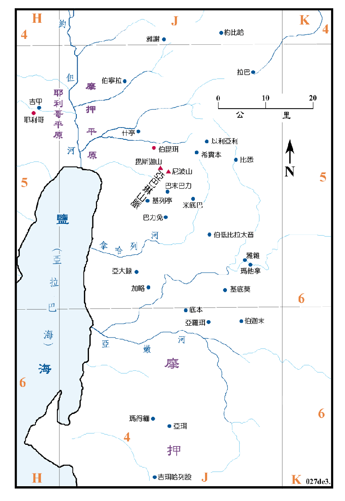

1406BC

行动线说明
| 圣经 | 说明 |
|---|---|
| 申3:23-25，34:1-4 | 摩西上山观看迦南美地。(参看申图01及书图11) |
| 申32:48-52，34:5-8 | 摩西去世和埋葬。 |
摩西求神许他过约但河，但神未答应，只令他上尼波山去观看迦南地。他所观看的迦南美地，是从但城到南地，包括基列和河西之地，所列举的地区名与<申图一>中的有所不同，而且多是以支派为名，请参看<书图十一>，就可以知道两者所述实在是一样的，此段中同样未提及巴珊。摩西在观看迦南美地后就去世了被葬在伯 珥对面的谷中，但是没有人知道他的坟墓在那里。